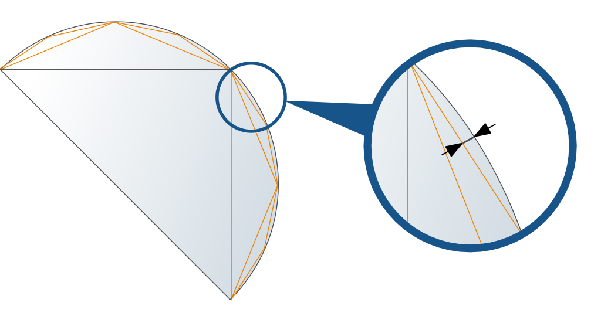

Collision checking with the hyperMILL Converter
A collision check can either be performed by defining milling areas in the hyperMILL browser or using the hyperMILL Converter (polyhedron model). Model areas located on disabled layers are not converted.
You have to create at least one 3DF file (polyhedron model) for each CAD model. Areas with a different accuracy and different stock allowances can be entered in a 3DF file.
Several 3DF files are required for CAD models that exceed the travel range of the machine and therefore need to be moved and reclamped during machining.
Recommendation: Always convert as many surfaces and solids as possible in one process. The conversion of individual areas with a higher resolution should always include adjacent surfaces.
Warning
All 3DF files belonging to a model become invalid if the model changes position in the coordinate system, is turned or scaled.
|
Start the converter via the → menu. |
The hyperMILL Converter dialog
The hyperMILL Converter dialog consists of the Setup and Options dialog pages.
Setup dialog page
3DF file: Select the storage location for the 3DF file. Set the default storage location in the hyperMILL settings dialog. The model name with the *.3df file extension is used as the file name.
Resolution
Mathematical resolution: Specify the resolution of edge curve circle segments in G1 lengths using the maximum chordal height. Set the surface resolution to be somewhat finer than the dimensional accuracy required in production.
Recommendation: roughing 0.5 to 0.1 mm, finishing 0.05 to 0.01 mm, HSC machining 0.005 to 0.001 mm.
Max. facet length: Controls the maximum facet length within the 3DF model. Can be defined for each group in group definitions.
|  |
If a sufficiently precise definition cannot be achieved using the Mathematical resolution function (for example, with surfaces that are only slightly curved), a limit can be set.
Selection options
All solids, All surfaces, All: Select one of these options if no user-specific selection for conversion is to be used and the selected areas are all to be converted with the same mathematical resolution.
User-defined
|
Surfaces: Select solids or surfaces to be converted. The same mathematical resolution applies to all selected surfaces/solids. |

Groups
Group definition: Select this option if you want to convert areas with different mathematical resolutions and/or different stock allowances, in order, for example, to define different collision and protected areas. A coarse resolution is sufficient for roughing areas. A finer resolution should be defined for different fine machining processes.
The group definition is relevant for: Profile Finishing, Equidistant Finishing, Iso Machining, Free Path Milling.
Groups dialog page
Groups
A 3DF file can contain up to five groups of surfaces and/or solids with different mathematical resolutions and different stock allowances. A surface can only be allocated to one Surface Group.
Current selection
Group name: Name of the surface(s).
|
Surfaces: Select the solids or surfaces to be converted. |
Mathematical resolution: Surface resolution of the model.
Allowance: Remaining material on the workpiece. If more than five groups are required to machine a model, create the respective number of 3DF files with different names. You assign the 3DF files in the job definition.
Max. facet length: Maximum facet length of the surfaces within a group.
Options dialog page
Mode of conversion
New 3DF file: The selected objects will be converted at the set mathematical resolution and a new 3DF file will be created.
Add to existing 3DF file: The selected objects will be converted at the set mathematical resolution and added to the existing 3DF file. In this way, several areas with different mathematical resolutions can be combined into one 3DF file and later modifications to the model can be included.
Does not apply to group definitions.
Save existing 3DF file
Yes: When adding surfaces, the existing 3DF file that the current conversion process is going to expand can be backed up by saving it under a different name.
Save as: Select the path and file name for saving the existing 3DF file.
No: An existing 3DF file is saved under an existing path and file name with the addition of the new surfaces/solids to be converted.